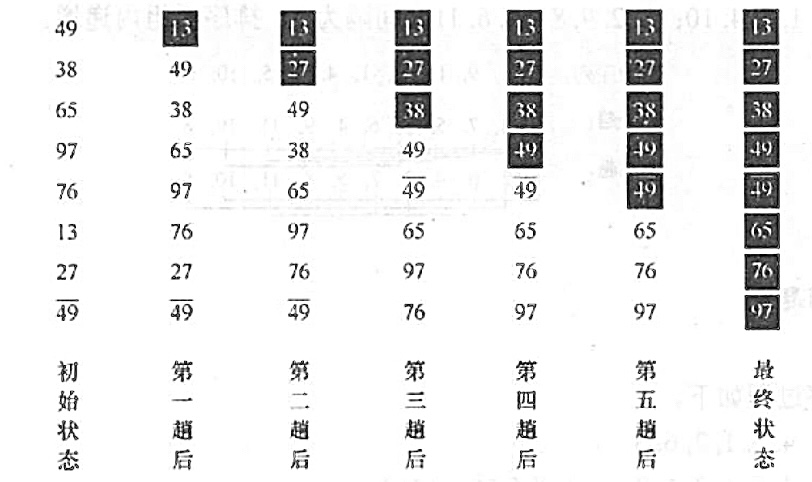

2022.10.21

void BubbleSort(ElemType A[], int n){
bool flag;
for(int i=0;i<n-1;i++){// 每一趟排序
flag=false;
for(int j=n-1;j>i;j--)
if(A[j-1]>A[j]){
swap(A[j-1],A[j]);
flag = true;
}
if(flag==false) return; // 本躺遍历后没有发生交换，表已有序
}
}
空间复杂度：O(1)
时间复杂度：平均O(n^2)，最坏O(n^2)
#include "stdio.h"
int Partition(SqList &L, int low, int high){
// 将第一个元素设为轴
DataType mid_e=GetItemRe(L,low);
// 寻找轴
while(low<high){
printf("[%d - %d : %d] ",low,high, ele_get_weight(mid_e));
ListPrint(L);
while(low<high&& !ele_small(GetItemRe(L,high),mid_e))high--;
ListSet(L,low,GetItemRe(L,high));
printf("[%d - %d : %d] ",low,high, ele_get_weight(mid_e));
ListPrint(L);
while(low<high&& !ele_big(GetItemRe(L,low),mid_e))low++;
ListSet(L,high,GetItemRe(L,low));
}
ListSet(L,low,mid_e);
printf("----------->");ListPrint(L);
return low;
}
void quick_sort(SqList &L, int low=1, int high=-1){
if(high==-1) high=ListLength(L);
if(low<high){
int mid = Partition(L,low,high);
quick_sort(L,low,mid-1);
quick_sort(L,mid+1,high);
}
}
void init_test_quick_sort(SqList &L, int num[],int n){
for(int i=0;i<n;i++)
ListInsertIndex(L,i+1,ele_build(num[i]));
}
void test_quick_sort(){
printf("交换排序 - 快速排序\n");
SqList L;
ListInit(L);
int num[] = {5,3,1,7,2,4,6,8};
init_test_quick_sort(L,num,8);
quick_sort(L);
}
运行结果：
交换排序 - 快速排序
[1 - 8 : 5] 5 3 1 7 2 4 6 8
[1 - 6 : 5] 4 3 1 7 2 4 6 8
[4 - 6 : 5] 4 3 1 7 2 7 6 8
[4 - 5 : 5] 4 3 1 2 2 7 6 8
-----------> 4 3 1 2 5 7 6 8
[1 - 4 : 4] 4 3 1 2 5 7 6 8
[1 - 4 : 4] 2 3 1 2 5 7 6 8
-----------> 2 3 1 4 5 7 6 8
[1 - 3 : 2] 2 3 1 4 5 7 6 8
[1 - 3 : 2] 1 3 1 4 5 7 6 8
[2 - 3 : 2] 1 3 3 4 5 7 6 8
[2 - 2 : 2] 1 3 3 4 5 7 6 8
-----------> 1 2 3 4 5 7 6 8
[6 - 8 : 7] 1 2 3 4 5 7 6 8
[6 - 7 : 7] 1 2 3 4 5 6 6 8
-----------> 1 2 3 4 5 6 7 8
时间复杂度：O($nlog_2n$)，是所有算法中平均性能最优的排序算法
【答案】：A
【答案】：C
[10],14,26,29,41,52
14,26,29,41,52,[10] - 5
26,29,41,52,[14],[10] - 5+4
5+4+3+2+1=6*5/2=15
【答案】：D
【答案】：C
【答案】：D
【答案】：D
【答案】：A
【答案】：C
1 {[4,8,9,10],5,6,20,1,2}
2 {[4,5,8,9,10],6,20,1,2}
3 {[4,5,6,8,9,10],20,1,2}
4 {[1,4,5,6,8,9,10,20],2}
5 {[1,2,4,5,6,8,9,10,20]}
【答案】：A,D，排好序的表快排最慢！
对下列 4个序列，以第一个关键宇为基准用快速排序算法进行排序，在第一趟过程中移动记录次数最多的是() A. 92, 96, 88, 42, 30, 35, 110, 100 B. 92, 96, 100, 110, 42, 35, 30, 88 C. 100, 96, 92, 35, 30, 110, 88, 42 D. 42, 30, 35, 92, 100, 96, 88, 110
【答案】：B
A [35, 30, 88, 42, 92, 96, 110, 100] 3
B [88, 30, 35, 42, 92, 110, 100, 96] 7
下列序列中，( ）可能是执行第一趟快速排序后所得到的序列。 I. {68, 11, 18, 69, 23, 93, 73} II. {68,11,69,23,18,93,73} III. (93, 73, 68, 11, 69, 23, 18} IV. {68, 11, 69, 23, 18, 73, 93} A. I. IV B. II. III C. III, IV D. 只有IV
【答案】：C
对n个关键宇进行快速排序，最大递归深度为（），最小递归深度为（） A. 1 B. n C. log2 n D. nlog2 n
【答案】：B,C
【2010 统考真题】对一组数据(2,12,16,88,5,10)进行排序，若前了趟排序结果如下： 第一趟排序结果：2,12,16,5,10,88 第二趟排序结果：2,12,5,10,16,88 第三趙排序结果：2,5,10,12,16,88 则采用的排序方法可能是（）。 A. 冒泡排序 B. 希尔排序 C. 归并排序 D. 基数排序
【答案】：A
【2010 统考真题】采用递归方式对顺序表进行快速排序。下列关于递归次数的叙迷中正确的是（） A. 递归次数与初始数据的排列次序无关 B. 每次划分后，先处理较长的分区可以減少递归次数 C. 每次划分后，先处理较短的分区可以減少递归次数 D. 递归次数与每次划分后得到的分区的处理顺序无关
【答案】：D
【2011 统考真题】为实现快速排序算法，待排序序列宜采用的存储方式是（)。 A. 顺序存储 B. 敞列存储 C. 链式存储 D. 索引存僗
【答案】：A
【2014 统考其题】下列选项中，不可能是快速排序第2趟排序结果的是（）. A. 2, 3, 5, 4, 6, 7, 9 B. 2, 7, 5, 6, 4, 3,9 C. 3, 2, 5, 4, 7, 6,9 D. 4.2,3,5,7,6,9
【答案】：C
【2019 统考真题】排序过程中，对尚未确定最终位罗的所有元素进行一遍处理称为一“趟”。下列序列中，不可能是快速排序第二趟结果的是()
A. 5, 2, 16, 12, 28, 60, 32, 72 C. 2, 12, 16, 5, 28, 32, 72, 60 B. 2, 16, 5, 28, 12, 60, 32, 72 D. 5, 2, 12, 28, 16, 32, 72, 60
【答案】：D